策略内蒸馏（On-Policy Distillation，OPD）是2026年后训练社区最热的方向之一，光是今年就冒出大约40篇相关论文。热度背后是一条很朴素的判断：与其让学生模仿教师写好的答案，不如让它先自己写，再逐token告诉它偏在哪里。
下面这条线把OPD的动机、方法谱系、失效模式和开放问题串在一起：为什么必须转到策略内，主流方法各自在解决什么，以及把同样的配方搬到长任务上之后它会在哪里断掉。
策略内蒸馏是知识蒸馏的一个变体：用一个更大的教师模型，把知识蒸馏进一个更小的学生模型，从而用一小部分训练成本换到接近教师的性能。
更形式化的说法是，知识蒸馏要训练学生策略 πθ 去模仿教师策略 πT的行为，手段是最小化两者输出分布之间的散度。
标准（离线）KD目标：ℒKD(θ) = 𝔼x∼D [ DKL( πT(·|x) ‖ πθ(·|x) ) ]
其中D是固定的离线数据集，x是输入提示，πT(·|x) 是教师的输出分布，πθ(·|x) 是学生的输出分布。数据集里同时有x和y，你要比较的是既有y的每个位置上，教师与学生对下一个token的分布。
策略内蒸馏是同一件事的变体，区别在于学生接受监督的数据由它自己生成，也就是来自正在被训练的那个策略本身。
策略内KD目标：ℒOnKD(θ) = 𝔼x∼D, y∼πθ(·|x) [ DKL( πT(·|x,y) ‖ πθ(·|x,y) ) ]
关键区别就是y ∼ πθ(·|x)：响应从学生自己的分布里采样，而不是取自固定数据集。
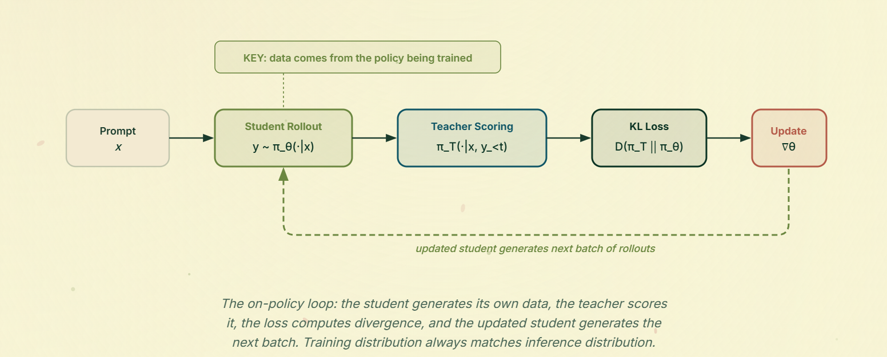
符号表。后面的内容数学密度不低，先把符号固定下来会省很多事。这里没有新东西，只是一张可以随时翻回来的速查表。
提示与响应。x是输入提示（比如「12加7等于多少」），y = (y1, …, yT) 是响应的token序列（比如「答案是19」）。y小于t表示位置t之前的所有内容：如果y是「答案是19」而t取4，那么它指的就是「答案是」。每个位置上模型都会输出整个词表V上的分布（现代语言模型大约5万到20万token），再从里面采样出一个token。
策略。πθ 是正在训练的学生，不同论文也写成pS或qθ，都是同一个东西。πT（或pT、p）是教师，通常是冻结的。当某个方法需要第三个锚点模型，比如需要贴近的微调前检查点时，我们管它叫 πref。
数据集。D是一组提示。离线KD里它同时包含 (x, y) 对，策略内KD里通常只包含x，因为y由学生生成。
前向KL与反向KL。KL散度衡量两个分布在同一词表上的差异程度。举个具体例子：如果教师在词表V = {A, B, C} 上的下一个token分布是pT = (0.7, 0.2, 0.1)，学生是 πθ = (0.3, 0.6, 0.1)，那么DKL(pT ‖ πθ) = Σv pT(v)·log( pT(v) / πθ(v) ) ≈ 0.37。约定是：第一个参数是参考分布，只要参考分布有质量而另一方没有，散度就会爆炸。
前向KL DKL(πT ‖ πθ) 把教师放在前面，所以只要某个token教师喜欢而学生不喜欢，学生就会被狠狠惩罚，于是它必须覆盖教师的每一个模态。这叫mode-covering，模态覆盖。
反向KL DKL(πθ ‖ πT) 把学生放在前面，只有当学生自己把质量放在教师不喜欢的token上时才会被惩罚。只要它选中的模态是教师认可的，它就可以安静地忽略教师的其他模态。这叫mode-seeking，模态寻找。
SFT对应前向KL，RL对应反向KL，而OPD文献里的很多争论，本质上是在争什么时候该用哪一个。
大模型后训练最头疼的问题之一是灾难性遗忘：模型在被微调的那项任务上越来越强，同时在其他任务上的表现断崖式下滑。
主因是分布漂移。模型偏离它原本的预训练分布太远，于是发生模态塌缩，性能随之丢失。
近来的两项工作把这个现象解释得比较清楚：RL's Razor和Retaining by Doing。
RL's Razor的观点是，两个策略之间的KL散度是衡量灾难性遗忘的一个好指标，因为两个策略之间的散度就代表了它们在token空间里的距离。
它进一步指出，策略梯度方法可以理解成一种保守投影：把策略约束在起点附近，同时把概率质量朝高回报的结果重新加权。每一步里，策略采样的是它本来就认为大概率出现的输出，然后按回报对这些样本重新加权，把质量移向高回报结果、压低低回报结果。由于采样的数据以及由此产生的更新都是相对策略自身而言的，这些更新是局部的、邻近的，而SFT带来的更新则可能是遥远的。
Retaining by Doing把这件事拆得更细，引入SFT的模态覆盖行为和RL的模态寻找行为作为对照。
SFT目标可以分解成一个前向KL加一个固定的熵项，因此在相差常数的意义上，它就是在做前向KL最小化：
ℒSFT(θ; x) = KL[ πstar(·|x) ‖ πθ(·|x) ] + H( πstar(·|x) )
这个目标只有在 πT与 πθ 完全重合时才会趋于零，于是策略被激励成不要漏掉任何模态。概率质量必须铺在教师认为有可能的一切地方，这就是模态覆盖。
类似地，带KL正则的RL目标可以重排成对最优倾斜策略 πstar的反向KL：
JRL(θ; x) = 𝔼y∼πθ[ r(x,y) ] 减去 β·KL[ πθ(·|x) ‖ πθ0(·|x) ] = 负的 β·KL[ πθ(·|x) ‖ πstar(·|x) ] 加 β·log Z(x)
策略只会在自己把高概率放在教师认为不可能的位置时被惩罚。因此只要它覆盖好了想要的模态，就可以完全忽略教师的其他模态。
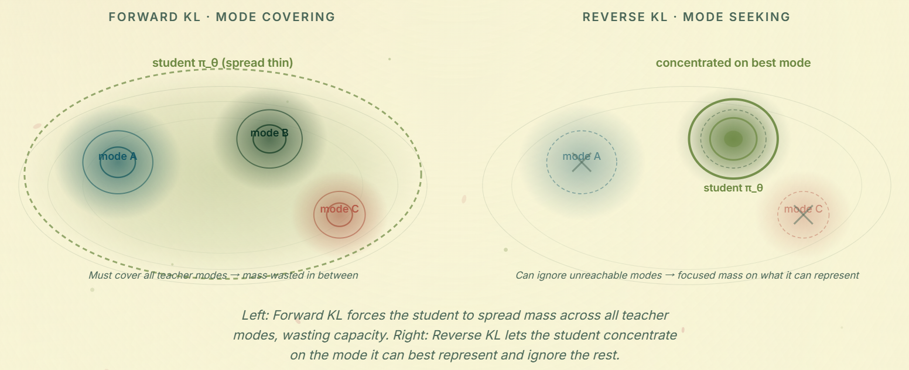
SFT在单模态场景下效果很好（这里的模态指我们关心的任务或技能），比如神经机器翻译：我们优化的那个唯一模态就是全部所需，因此不会遗忘。但在多模态场景下，比如把代码、数学、写作等能力装进同一个模型的现代语言模型，模态覆盖的天性反而常常成为分布漂移的源头。
RL在这种场景里表现更好：它可以只寻找我们用来微调的那个模态，而既然不覆盖其他模态不会被惩罚，它也不会去尝试，于是原有行为得以保留。
除了遗忘，离线蒸馏还有另一个根本问题值得细看：误差累积。Ross等人在2011年的DAgger分析里把它形式化了：在固定离线数据集上训练会导致误差随序列长度二次累积，而策略内训练把它降回线性。
𝔼s∼dπθ[ Σt=1..T ℓ(st) ] ≤ O(εT²) 经策略内蒸馏变为O(εT)
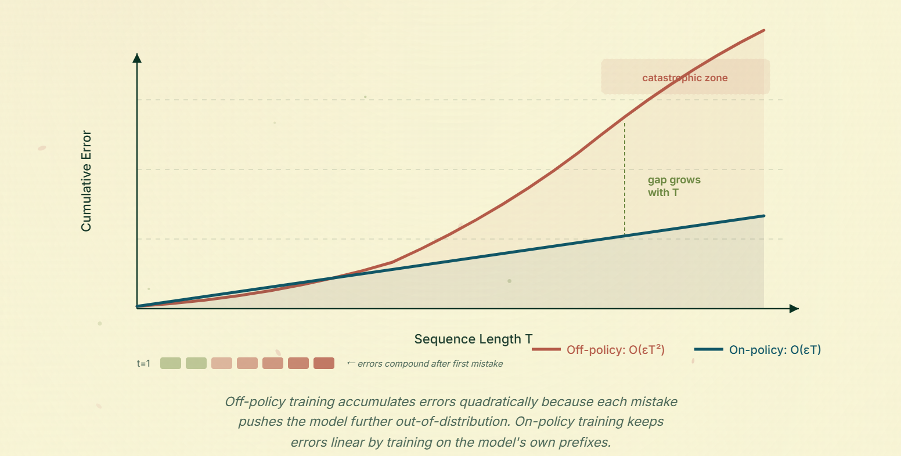
这里的直觉不显眼但很重要。离线训练时，学生的监督信号来自教师或固定数据集生成的序列，那是它自己永远不会产出的响应。但推理时学生生成自己的前缀，任何一个早期错误都会把序列推到模型从未训练过的token空间区域。模型没见过这类前缀，就更容易犯错或发生模态塌缩。每个错误都让下一个错误更可能发生，误差于是二次爆炸。
对于要生成1000个以上token的大模型，这可能是灾难性的。思维链早期的一个坏token就能让整条推理轨迹脱轨，而模型没有任何恢复机制，因为此后每一个状态相对训练数据都越来越偏离分布。
策略内蒸馏直接切断了这个循环，它弥合的是暴露偏差缺口（exposure bias gap）：训练时输入由教师生成、推理时输入由学生生成，两者之间的分布不匹配。既然学生始终在自己的生成结果上训练，它在训练时看到的前缀就正是推理时会产出的那类前缀。早期错误因此落在分布内，累积效应被抑制，累计误差只随序列长度线性增长。对于要产出越来越长的agent轨迹的现代语言模型，这是一项非常有用的改进。
有了这些铺垫，接下来可以看这个领域最新的工作：它们赢在哪里，又会在哪里失效。
近年关于策略蒸馏的工作大致可以归到三类。
第一类是策略内蒸馏本身，把教师当成一个固定的监督源；
第二类是策略内自蒸馏，教师和学生共享权重，差别只在上下文里；
第三类是让策略内蒸馏真正能跑起来的配套工作，比如跨分词的蒸馏和知识缺口的弥补。
下面按这个顺序展开。
MiniLLM是第一篇明确把大模型知识蒸馏框定为策略内蒸馏的工作，这一节后面的大部分方法都是对它的改进。它的核心动作是把标准KD里的前向KL换成反向KL，并把蒸馏当成一个RL问题来处理，其中教师的对数概率充当奖励信号。
这件事为什么重要，要看模态覆盖。前向KL强迫一个小学生去覆盖一个远大于它的教师的每一个模态，而它根本没有这个容量，结果是概率质量被摊到学生无法表示的各个区域。反向KL把激励方向反过来：学生可以忽略教师分布里它够不到的部分，专注在够得到的部分。这就是反向KL的模态寻找性质，论文认为这正是把大教师蒸到小学生时它有用的原因。
MiniLLM的目标是最小化学生qθ 与教师p之间的反向KL，它等价于一个策略梯度设置，其中逐token的对数比充当奖励：
θ = argminθ KL[qθ ‖ p]，rt = log( p(yt | y小于t, x) / qθ(yt | y小于t, x) )
如果教师给某个token的概率比学生高，rt大于0，该token被鼓励；如果学生相对教师过度自信，rt小于0，它被抑制。轨迹回报就是后缀和Rt = Σt从t到T的rt，于是既有token级监督，又有序列级的信用分配。
在此之上，MiniLLM加了三个工程修正：
1. 单步分解。梯度被拆成一个即时的token级项和一个长期未来回报项，即 (∇ℒ)Single加上 (∇ℒ)Long。单步项直接在每一步的词表上计算反向KL信号，于是每个前缀都能收到密集的下一token修正，而不是一个标量。
2. 教师混合采样。训练早期纯学生rollout质量很差，所以MiniLLM从p̃ = α·p + (1−α)·qθ 里采样，并用近似重要性权重wt ≈ qθ(yt|·) / p̃(yt|·) 做修正。这样轨迹会贴近教师的支撑集，也抑制了奖励钻空子。
3. 长度归一化。长期回报要除以剩余长度，避免模型偏向短输出。
最终更新把单步项、长度归一化后的长期项，以及一个为了保住通用语言建模能力的辅助预训练损失 ℒPT组合在一起。整体最好理解成以教师为奖励模型的策略梯度，再加上上面三个把方差压住的修正。
MiniLLM完全押注在反向KL的纯策略内设置上，GKD则问了一个问题：我们真的必须选边吗？它面对的是同一个训练与推理的分布错配问题，但给了更灵活的解法：用一个旋钮 λ 在数据集监督的KD和策略内KD之间插值，同时把散度本身（前向KL、反向KL、JSD）当成第二个旋钮。
动机很直白。如果只在数据集序列上训练，学生训练时永远见不到自己的错误，推理时就会走进它从未被监督过的前缀。如果只在学生rollout上训练，训练早期的rollout都是垃圾，而教师对垃圾的反馈未必有用。GKD把两者混合起来。
学生从自己的分布里采样输出y ∼ pSθ(·|x)，教师在这条轨迹上给出逐token反馈，GKD再用一个混合权重 λ 把策略内项和数据集监督项组合起来：
ℒGKD(θ) = (1−λ)·𝔼(x,y)∼(X,Y)[ D(pT ‖ pSθ)(y|x) ] + λ·𝔼x∼X, y∼pSθ(·|x)[ D(pT ‖ pSθ)(y|x) ]
token级的散度D(pT ‖ pSθ)(y|x) 就是各个前缀上的散度在序列长度上的平均，梯度不会穿过采样步骤回传。λ 等于0退化成普通的监督KD，等于1是完全的策略内KD，中间值则是两者的插值。散度的选择（前向KL、反向KL或JSD）是第二个旋钮，论文也讨论了随之而来的模态覆盖与模态寻找的取舍。
GKD还能干净地扩展到RL微调：在RL奖励里加一个蒸馏正则项，
𝔼x∼X, y∼pSθ(·|x)[ (1−α)·r(y) 减去 α·D(pT ‖ pSθ)(y|x) ]
α 等于0时这是纯RL，等于1时是纯策略内KD，中间则让OPD变成RL更新上的一个教师锚定正则项。GKD的主要贡献是这个统一视角：与其事先选定离线还是在线、选定哪种散度，不如把两者都当成超参来扫描。如果你不确定自己该落在光谱的哪一段，GKD让你把它试出来。
GKD把在线还是离线当成一个混合旋钮 λ，把散度当成从固定菜单里另选一项。DistiLLM（Ko等，2024）指出这两个选择各自都有特定的失效模式，在实践里会拖累OPD，于是给每个轴各提了一个修正。
散度这一侧：标准的反向KL是模态寻找的，会塌到学生本来偏好的那个模态上；前向KL是模态覆盖的，会强迫学生把质量摊在它表示不了的教师模态上。两者在训练早期都不好用，那时教师和学生分布几乎不重叠，对数比在某些位置会爆炸。DistiLLM的偏斜KL通过把KL的第二个参数朝第一个插值来绕开这一点：
DSKL(α)(p ‖ q) 定义为DKL( p ‖ αp + (1−α)q )
反方向则有一个对称的偏斜反向KL。把p混进分母之后，只要p有支撑，对数比就有上界，于是即便两个分布严重不一致，梯度也保持良好行为，而这正是训练早期OPD所处的区间。论文还证明由此得到的目标具有比原始KL更紧的泛化界。
采样这一侧：它不用GKD那个固定的 λ，而是一个自适应的离线方案，一开始大量使用离线（教师生成的样本便宜且表现好），随着学生稳定下来再逐步转向学生自己的rollout。要点是别在学生还说不出有用东西的时候把算力烧在它的rollout上，也避免在学生稳定后卡在暴露偏差的高原期。放回GKD的框架里看，DistiLLM就是把 λ 从超参改成了调度曲线，而偏斜KL是让这条曲线真的能训起来的散度。
G-OPD接着MiniLLM往下推，把RL的类比推得更远。它往目标里引入了第三个参考模型 πref，经过一些重排之后OPD的损失开始长得像DPO的隐式奖励形式。一旦有了参考模型，你就可以把奖励项的缩放与信赖域分开，而这个缩放因子 λ 就成了一个控制推到教师之外多远的旋钮。
从反向KL的OPD目标出发，在期望里加上再减去log πref(y|x)，就能把它重排成对参考模型的对数比奖励加一个KL信赖域：
JOPD(θ) = maxθ 𝔼x∼D, y∼πθ(·|x)[ log( πstar(y|x) / πref(y|x) ) 减去DKL( πθ(·|x) ‖ πref(·|x) ) ]
对数比项正是在DPO里出现过的隐式奖励形状，也就是r(x,y) = β·log(πθ/πref) 加 β·log Z(x)，其中Z项因为只依赖x而消掉。这意味着教师提供密集监督，参考模型提供信赖域锚点。广义的G-OPD目标把奖励项乘上 λ：
JG-OPD(θ) = maxθ 𝔼x∼D, y∼πθ(·|x)[ λ·log( πstar(y|x) / πref(y|x) ) 减去DKL( πθ(·|x) ‖ πref(·|x) ) ]
取0小于 λ 小于1时，学生性能会落在参考模型与教师之间。λ 大于1时，G-OPD鼓励学生的对数概率分布越过与教师对齐的位置，论文报告了在多教师OPD、良好泛化以及强到弱蒸馏设置下相当有意思的结果。教师在这里不再是硬天花板，任何还不错的参考策略（你自己的SFT检查点就行）都足以用来外推。
MiniLLM、GKD和G-OPD都用同一个目标处理正负token。AOPD的主张是，正是这种对称性造成了实践中大量OPD的不稳定：负向梯度的噪声更大、尾部更重，行为上与正向梯度不太一样。它的修正是把损失拆成两半，各自交给不同的目标。
它先把OPD目标拆成逐token的正向强化项与负向强化项，即 ℒOPD = ℒPos + ℒNeg，各自按该token上的优势At加权。假设是这两半应该区别对待，主要因为负向强化有三个问题：
1. 负向优势的重尾。大部分token聚集在零附近，而负侧表现出明显更宽的尾部。这种极端方差直接来自优势公式的对数性质：教师与学生对数概率之差会随着学生概率趋近于零而指数级放大，更新又被它主导，于是产生虚假膨胀的方差和梯度。
2. 零优势处的停滞。大多数采样token的优势都聚集在零附近，因此没有学习信号。
3. 探索黑洞。在负向强化里，如果教师抑制某个错误token，它会得到一个负优势；但这份概率质量被释放后会分配给其他未被采样的token，而且通常流向本来就是高概率的token，于是那些低概率但正确的token得不到更新。
这引出一个逐token的门控目标：对负优势和零优势的token使用top-K前向KL，其余用标准OPD损失：
ℒAOPD = 𝔼[ (1/|y|)·Σt从1到 |y| 的Gt·ℒFKL,t + (1−Gt)·ℒOPD,t ]，其中Gt = 1当且仅当PT(yt|ct) ≤ PS(yt|ct)
其中 ℒFKL,t是在集合St = TopK( PT(·|ct), K ) 上的top-K前向KL。门控Gt用的是有界概率差而不是对数比，因为概率很小时对数比会爆炸：Gt等于1会抬高教师偏好的token，即便学生当前给它的概率接近零；Gt等于0则退回完整的OPD。前向传播完全没有变化，只有损失变了，论文报告训练明显更稳定。
前面所有方法都假定教师是一个更大的模型。策略内上下文蒸馏丢掉了这个假设：教师和学生可以是同一组权重，区别只在于提示里有什么。你要做的是把带额外上下文的模型，蒸馏进不带该上下文的同一个模型。
这件事有用，是因为上下文学习在推理时很贵：每调用一次都要把长上下文重读一遍。如果你能通过OPD一次性把相关上下文烤进权重，推理时就能免费拿到这份行为；而且由于样本来自没有上下文的学生，模型内部所知与它输出样子之间的对齐会更紧。
方法本身很简单，走两遍：一遍是带上下文的教师模型加上输入提示x，另一遍是不带上下文的学生模型回答同一个x。两者之间的知识缺口，用从无上下文学生指向带上下文教师的前向KL来弥合，并在学生的rollout上求值：
ℒ(θ) = 𝔼(x,c)∼D, y∼πθ(·|x)[ (1/|y|)·Σt从1到 |y| 的DKL( πθ(·|x, y小于t) ‖ πteacher(·|c, x, y小于t) ) ]
这同样是模态寻找的。有意思的是他们发现，对于较小的模型，这比直接做上下文学习效果更好，说明经验知识与消费它的模型之间的策略内对齐同样关键。
另一个有意思的地方是，既然被蒸馏的是上下文，教师的选择就可以变化，策略模型本身也可以用来蒸馏知识。一旦你不再把教师想成「一个更大的模型」，而是想成「任意一个特权信息来源」，你就走到了自蒸馏，也就是下一节的内容。
在进入自蒸馏之前，先给上面这些方法一张紧凑的对照表。
| 方法 | 采样来源 | 散度与信号 | 额外组件 | 适用场景 | 示例 |
|---|---|---|---|---|---|
| MiniLLM | 学生（混入教师样本） | 反向KL当作RL奖励 | 单步分解、长度归一化、预训练损失 | 有一个强教师和一个小得多的学生，希望学生专注在它能表示的模态上 | 代码摘要：学生写通用措辞，教师偏好parses、validates这类精确动词，token奖励在学生的前缀上逐步收紧用词。 |
| GKD | 数据集与学生rollout的混合（λ） | 任意散度：前向KL、反向KL、JSD | 可选的RL奖励项 | 想用一个旋钮在离线KD与策略内KD之间滑动，或想把蒸馏折进RLHF流程 | 分阶段训练：先用数据集KD为主，等学生输出稳定后再提高rollout KD的比重。 |
| DistiLLM | 自适应的教师与学生混合（带调度） | 偏斜KL与偏斜反向KL | 自适应离线调度 | 原始KL在训练早期爆炸，或纯策略内KD太慢、纯离线KD又陷入高原 | 早期数学调优：先依赖更干净的教师样本，等思维链轨迹连贯后再转向学生rollout。 |
| G-OPD | 学生 | 相对参考模型的对数比奖励加KL | 一个参考模型、缩放因子 λ | 想让学生有可能超过教师，或者你有多个教师、一个较弱的教师 | 领域迁移：参考模型整体安全，教师在符号任务上很强，调 λ 能提升符号任务表现而不丢基础行为。 |
| AOPD | 学生 | 正向token用OPD，负向token用top-K前向KL | token级掩码Gt | OPD训练不稳定、梯度被负向优势的长尾主导，或学生卡住不动 | 证明与代码纠错：过度自信的错误token走更稳妥的负向修正通道，而不是噪声很大的对称更新。 |
| 策略内上下文蒸馏 | 学生（无上下文） | 指向带上下文教师的前向KL | 一个特权信息教师，常常是同权重加额外上下文 | 想把长上下文、工具轨迹或推理理由内化进权重，让推理时不用每次都付这份成本 | 政策问答：教师看到检索到的政策文本，学生只看到问题，训练把有依据的措辞迁移到无检索的推理里。 |
一个粗略的心智模型：MiniLLM和GKD回答了「OPD到底该怎么做」这个基础问题，DistiLLM把散度和采样调度打磨到真能训起来，G-OPD和AOPD在目标本身做改进，而策略内上下文蒸馏是在你不再把教师当成更大模型、而是当成任意特权信息源时自然出现的东西。最后这个视角正是下一节的起点。
策略内上下文蒸馏已经把我们推向这个方向：当教师只是带额外上下文的同一个模型时，更大模型这个假设就没了。策略内自蒸馏把这条思路推到底：教师和学生共享同一组权重，教师唯一多出来的东西是某种学生看不到的特权信息。这里的策略内蒸馏，任务是把这份隐藏知识诱导进学生。
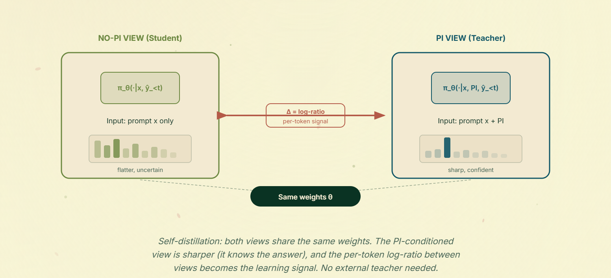
这是今年这一波自蒸馏工作的开山之作。动机来自人类怎么从参考答案里学习：你先自己试着解题，再看一份完整的解法，然后更新下次会怎么做。机制完全对应。对问题x从学生采样一条解 ŷ，然后把同一条 ŷ 分别过两遍学生：一遍只条件在x上，一遍条件在x加一份参考解ystar上。不重新生成任何东西，只是让学生自己的token在两种视角下被打分。
ℒOPSD(θ) = (1/|B|)·Σ(x,ystar)∈B (1/|ŷ|)·Σn从1到 |ŷ| 的D( pT(·|ŷ小于n, x, ystar) ‖ pS(·|ŷ小于n, x) )
其中D可以是任意散度（他们用的是JSD）。他们还发现风格类token的逐token散度远高于有意义的推理token，于是加了一个简单的逐token截断，避免少数风格离群点主导损失：
Dclip(pT ‖ pS) = (1/|ŷ|)·Σn,v min( ℓn,v, τ )
他们还推导了一个策略梯度形式，把带特权信息视角与无特权信息视角之间的逐token对数比当成优势：
An(x, ŷ) = log pT(ŷn | x, ystar, ŷ小于n) 减去log pS(ŷn | x, ŷ小于n)，ℒ(θ) = 负的 𝔼[ (1/|ŷ|)·Σn An·log pS(ŷn | x, ŷ小于n) ]
对数比取代了通常的奖励减基线，策略梯度由此由逐token的密集监督驱动，而不是稀疏的轨迹奖励。梯度不会穿过优势项，它被当成常数处理。如果让它穿过去，优势会随每次更新跟着策略漂移，方差立刻爆炸。
散度消融也值得一提：在逐token监督下，前向KL胜出。这与设置相符。既然教师和学生共享权重，前向KL通常要付的容量税（把学生质量涂抹到它表示不了的教师模态上）在这里根本不存在。教师的条件下分布本质上就是学生自身条件下分布在特权信息下被锐化的版本，而模态覆盖正是你想要的行为，因为教师被特权信息抬起来的token，学生都该跟上。他们还发现全词表的logit蒸馏优于采样token的优势策略梯度。
SDFT保留了自蒸馏推理者的对数比即优势思路，但把它重新框定为持续学习，并把主要精力花在教师到底是什么上。它的梯度估计器与自蒸馏推理者同形，带特权信息的视角 π(·|x, c) 出现在逐token对数比的分母上。
核心主张是，在满足两个条件时，带特权信息的策略是当前任务最优策略的一个良好近似：
1. 最优性。教师的期望回报与未知最优策略的期望回报相同，也就是说带特权信息的策略确实在解这个任务。
2. 最小偏离。在所有回报最优的策略里，最优的那个与当前模型的散度最小。
SDFT与自蒸馏推理者真正不同的地方在教师参数化，他们把它当成一等设计选择，而不是同权重加额外上下文。他们消融了三种选项：冻结教师训练稳定但会滞后，因为它永远不反映学生的更新；直接拿实时学生检查点当自己的教师不稳定；学生检查点的EMA处在中间，兼顾两者的好处。他们还对「带特权信息的策略可以当教师」这一说法所依赖的上下文学习假设给了实证验证。
SDPO沿用自蒸馏推理者和SDFT的特权信息当教师配方，但把特权信息可以是的东西拉宽了。在自蒸馏推理者里它是参考解，在SDFT里它是任务上下文，SDPO用的是环境自己的文本反馈：运行时错误、评判模型的评语、测试轨迹，凡是验证器已经在标量奖励旁边产出的文本都算。论点是标准RLVR把这些文本丢掉了，只从一个结果标量里学习，这在长轨迹上是一个残酷的信用分配瓶颈。
机制还是那套两遍的戏法。对提示x和rollout出的尝试y，模型从环境拿到一段文本反馈f，比如栈追踪、评判笔记，有时干脆是同一个提示下一条成功的rollout，用作失败那条的隐式反馈。同一个模型条件在 (x, f) 上就成了自我教师，记作qθ(·|x, f)，SDPO的损失是沿着学生自己轨迹的逐token KL蒸馏：
ℒSDPO(θ) = Σt从1到T的DKL( πθ(·|x, y小于t) ‖ stopgrad( qθ(·|x, f, y小于t) ) )
教师那一侧的stop-gradient是关键，它防止教师向学生回归、把f完全忽略掉。梯度与自蒸馏推理者是同一个对数比即优势的形状，只是把ystar换成f，这也把这一节的方法串了起来。
概念上的动作是：把在上下文里回看当成一个免费教师。模型本来就会读错误信息并调整，这项能力只是被锁在提示里。它也能用在只有标量奖励的普通RLVR场景：拿同一个提示下成功的那条rollout当作失败那条的反馈，于是稀疏信号里也能榨出密集监督。
另一个好性质是SDPO也能用在测试时。把它当内循环跑在单个难题上，每次尝试的发现概率会提高，用大约三分之一的尝试次数就能达到best-of-k的成功率。同一个目标同时是训练时和推理时的过程，这在OPD方法里并不常见。
GATES站的位置和自蒸馏推理者、SDPO一样，教师都是带额外上下文的同一个模型，但它直面了一个前两篇论文默默假设掉的问题：如果带特权信息的教师是错的呢？自蒸馏推理者拿到的是标准答案，教师按构造就是可信的；SDPO拿到的是有验证器兜底的错误轨迹。GATES针对的是以文档为依据的问答，导师看得到源文档而学生看不到，而且哪里都没有标准答案或验证器。
它的修正是从导师自身在线推导可靠性信号。对每个提示qi，采样k条以文档为依据的导师rollout，从每条里抽出最终答案，定义一个题目级门控gi取0或1：当k条rollout里至少有 τ 条对同一个答案达成一致时取1，否则取0。第二层是rollout级资格eij，只保留答案与共识一致、且通过泄漏过滤的导师rollout。直觉就是通常的自洽性：模型对了的时候，多次采样容易收敛到同一个答案；它在猜的时候，答案会散开。于是带特权信息rollout之间的一致性就成了答案正确的代理，用它做门控可以滤掉那些蒸馏反而有害的题目。
一旦题目通过门控，GATES就通过留存导师token上的逐token负对数似然，把导师完整的推理轨迹蒸馏进无文档的学生：
ℒoff(θ) = 负的 (1/N)·Σi,j gi·eij·Σt log πθ( yijt(T) | yij小于t(T), qi )
按留存导师token的总数归一化。他们还加了一个策略内变体：采样学生rollout，对每个token用带截断的对数比优势打分，
At = clip( log πT(yt(S) | y小于t(S), d, q) 减去log πθ(yt(S) | y小于t(S), q), [负a, a] )
对At做stop-gradient，然后把两项组合起来：ℒ(θ) = λoff·ℒoff + λon·ℒon，在他们的标准设置里 λoff取1.0，λon取0.1。离线轨迹项承担了大部分实证工作。轨迹提供逐token的密集监督，这和MiniLLM、GKD想要策略内KD而不是只用标签KD是同一个理由，也和自蒸馏推理者想要对数比监督而不是最终奖励是同一个理由。只蒸馏答案会把特权信息诱导出的丰富行为压成一个token目标，把有教师这件事的意义整个浪费掉。
这三篇论文放在一起，能看到特权信息的定义在持续泛化。自蒸馏推理者用参考解，SDPO用环境反馈，GATES用检索到的文档加一个自洽性门控。目标几乎没变，变的是特权信号从哪来，以及你有多信它。
CRISP是这一节里特权信息思路最精简、大概也最好玩的一个版本。它的特权信息不是标准答案，不是环境反馈，也不是文档，而是提示里的一句「简洁一点」。就这一句。教师是条件在这句话上的同一个模型，学生是没有这句话的同一个模型，损失是学生自己rollout上的逐token反向KL：
ℒCRISP(θ) = 𝔼x, ŷ∼πθ(·|x)[ (1/|ŷ|)·Σt DKL( πθ(·|x, ŷ小于t) ‖ πθ(·|x, c, ŷ小于t) ) ]
其中c就是那句「简洁一点」。这里选反向KL与MiniLLM在跨模型场景下的理由相同：学生应该模态寻找，朝着带特权信息的教师偏好的简洁模态靠，而不是把质量摊到简洁和啰嗦两边。整个循环里没有标准答案，没有token预算，也没有难度估计器来决定哪些题该压缩。
结果比设置本身更有意思。CRISP会自动把容易的题压得很狠，而难题上的推敲基本原样保留，这正是一个token预算启发式想做但不用人写的事。
两个实现细节值得记下来。第一，像「简洁一点」这样的定性指令胜过显式的token数目标，这与一个更普遍的观察一致：语言模型不擅长数数，却擅长跟随风格线索。第二，他们会周期性地刷新教师检查点，而不是冻结它或用实时学生，这与SDFT落到的那条准EMA中间路线是同一个思路。
RLSD是这一节里第一篇不扩展自蒸馏、反而对它提出反例的论文。它的批评是：只从带特权信息的教师那里拿学习信号，会导致严重的信息泄漏和长期训练不稳定。泄漏的直觉不难想到：如果教师唯一的优势就是特权上下文，而学生又被训练成在所有地方都对齐教师的下一token分布，那学生最终会学会在没有特权信息的提示上模仿特权信息形状的输出，这在训练分布上看像是赢了，换个地方就散了。
它的修正是把监督提供的东西拆开。自蒸馏擅长说一个token该动多少，因为带特权信息与不带特权信息两种视角之间的逐token对数比是一个细粒度的量级信号。RLVR擅长说哪个方向是对的，因为环境给出的正确性是唯一真正落在任务上的信号。RLSD从自蒸馏取更新量级、从RLVR取更新方向，合成成单个逐token更新。
具体来说，对学生rollout的每个token，先取特权信息增益，
∆t = sg( log PT(yt) 减去log PS(yt) )
其中PT是带特权信息的视角，PS是不带的那一侧，再构造逐token证据权重：
wt = exp( sign(A)·∆t ) = ( PT(yt) / PS(yt) ) 的sign(A) 次方
A是轨迹级的GRPO优势，然后把它插进一个PPO风格的截断目标：
ℒRLSD(θ) = 𝔼[ (1/G)·Σi (1/|y(i)|)·Σt min( wt·A(i), clip(wt, 1减 εw, 1加 εw)·A(i) ) ]
于是教师的对数比依然决定每个token被推得多狠，但推的方向完全由这条rollout是否真的正确来决定。截断的作用和GRPO里的信赖域一样，只是落在信用重新分配的幅度上，而不是策略步长上。这样既找回了让自蒸馏推理者有效的逐token密集监督，又把方向钉在一个外部验证器上，让模型没法靠模仿自己带特权信息的输出来钻空子。
给这一节一个整体读法：自蒸馏推理者立下了模板，SDFT、SDPO、GATES、CRISP各自把特权信息的定义拉宽，RLSD则论证模板需要一个外部锚点，否则会自己把自己吃掉。「特权信息够了」和「特权信息加验证器」之间的这种张力，大致就是自蒸馏文献当前所处的位置。
在进入失效模式之前，先看一眼自蒸馏的整体版图。后面几列分别问：特权信号是什么、损失拿它做什么、这篇论文相对前一篇具体多做了什么。
| 方法 | 特权信号 | 损失与信号 | 区别性动作 | 适用场景 | 示例 |
|---|---|---|---|---|---|
| 自蒸馏推理者 | 参考解 | 在学生的rollout上计算带特权信息与不带特权信息两种视角之间的逐token散度 | 立下自蒸馏模板：同一组权重的两种视角，对数比充当软教师 | 任务有标准解法，想在没有外部教师模型的情况下把它们内化 | 代数辅导：学生先自己做，带特权信息的视角随后抬高缺失的中间步骤、压低错误的变换。 |
| SDFT | 新任务的任务上下文 | 同样的对数比即优势形状 | 用EMA更新的教师检查点充当带特权信息的视角，并框定为持续学习 | 做持续微调，想在不冻结教师的前提下避免遗忘 | 持续适配：EMA教师既避开冻结检查点的过期指导，也避开完全实时检查点的噪声追逐。 |
| SDPO | 环境的文本反馈f | 对自我教师做stop-gradient的逐token KL | 把验证器文本（栈追踪、评判笔记）当成免费教师，而不是丢掉只留一个标量 | 验证器本来就会输出有用文本，你却把它压成一个数字浪费掉了 | 代码修复：追溯信息成为特权信息，蒸馏迁移出可复用的排错token模式。 |
| GATES | 问答任务的检索文档 | 门控导师轨迹上的离线负对数似然加策略内截断优势项 | 共识门控过滤掉以文档为依据的导师不可靠的那些题目 | 带特权信息的教师有时会错，而你手上没有验证器兜底 | 文档问答：只蒸馏高共识的导师轨迹，噪声很大的检索条件答案被滤掉。 |
| CRISP | 一句「简洁一点」的指令 | 带指令与不带指令两种视角之间的逐token反向KL | 证明特权信息可以是一行风格提示，仍然能驱动自动的难度感知压缩 | 想压缩推理长度，又不想写难度估计器或token预算启发式 | 解释压缩：简洁指令教师丢掉重复脚手架，学生学着给出更短但仍然正确的轨迹。 |
| RLSD | 一份理由或特权信息上下文，加一个验证器 | 带wt权重的PPO截断目标 | 量级来自自蒸馏的对数比，方向来自验证器的sign(A) | 纯自蒸馏开始漂移、或者把特权信息的形状泄漏到无特权信息的提示上，而你有一个二值验证器 | 证明验证：特权信息逐token控制更新量级，验证器的正确性翻转更新的符号。 |
跨行要盯住的那一列是「区别性动作」。目标在自蒸馏推理者写下来之后基本就定了，变的是什么算特权信息，以及在RLSD这里，由谁来决定每次更新的符号。
这部分文献把大部分精力花在配方上，对真正跑长任务时会坏在哪里着墨少得多。近期有三篇工作正面处理这件事：一篇综述把OPD形式化为学生轨迹上的f-散度最小化，并梳理了反复出现的失效模式；Fu等人研究token级OPD的实证失效模式；Zhang等人研究特权信息对模型校准做了什么。把它们和前面几节已经暴露出的线索放在一起看，能得到一个相当连贯的图景。
这些失效模式大致沿四个轴分布：估计器层面、教师层面、信息缺口层面，以及多轮与agent场景。它们之间还有不少交叉。下面逐条看。
所有OPD和自蒸馏方法优化的都是学生rollout上token级的采样反向KL。这与MiniLLM和GKD在理论上真正想最小化的序列级反向KL并不是同一个东西。Fu等人证明token级估计器相对序列级估计器是有偏的，而且这个偏差并不温和：轨迹上的未来回报耦合越强，偏差越大，而长程推理恰恰生活在这样的机制里。同一篇论文里的受控合成实验显示，这种耦合还会放大梯度方差、明显让训练不稳定。于是你既拿到一个更差的目标，又拿到它更嘈杂的估计，而这两件事恰好发生在整个领域最想训练的那类轨迹上。
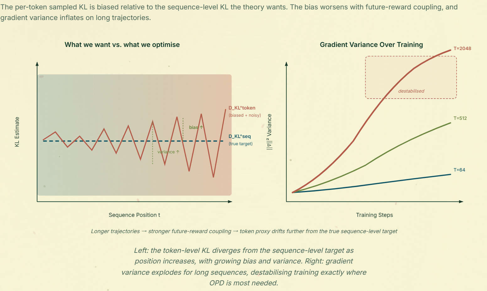
这正是AOPD在梯度那一侧已经在对抗的不稳定性：负优势token的梯度尾部很重，会把正优势的梯度淹没。模式一直是那个老模式：当你把群体层面的目标换成一个采样得到的逐token代理，你等于用一个干净但无法估计的目标，换了一个能估计但很嘈杂的目标。
策略内的主张是学生的rollout才重要，因为那才是学生推理时真正会走到的轨迹。它隐含的假设是：教师在这些轨迹上仍然有有用的话要说。这个假设破碎得比人们预期得早。一旦学生的前缀漂移出教师典型支撑集几个token，教师的下一token分布就会被外推到一段它从未训练过的序列空间。实践中这表现为教师在不相关的token上分配近似均匀或奇怪尖峰的质量，而学生认认真真地把这份噪声蒸馏下来。
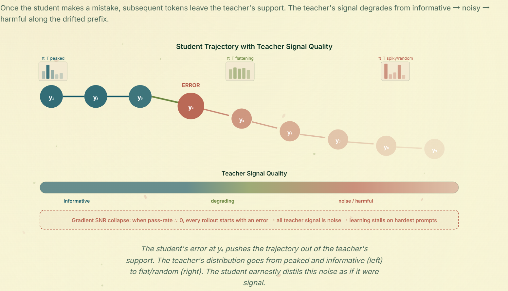
还有一个值得单独命名的退化边界情形：梯度信噪比塌缩。在学生通过率接近零的提示上，每条rollout里都含有早期错误，教师在这些rollout上的信号基本是噪声叠噪声，逐提示的梯度信噪比消失。模型恰好从它最需要学习的那些提示上学不到任何东西。这是前缀漂移的对偶问题，只是发生在提示层面而不是轨迹层面。
前缀问题还有一个更隐蔽的版本，即便教师整条rollout都保持良好校准也会出现。教师依然知道哪个token最好，只是优势微弱，于是token级KL梯度几乎不携带信号，而按通常的标准看什么都没有坏。这被称为局部可教性塌缩。论文主张把OPD监督截断在教师局部优势开始向下变化的位置，而不是固定前缀长度。信号是逐渐衰减的，最优的监督窗口是轨迹相关的，而不是按位置固定的。
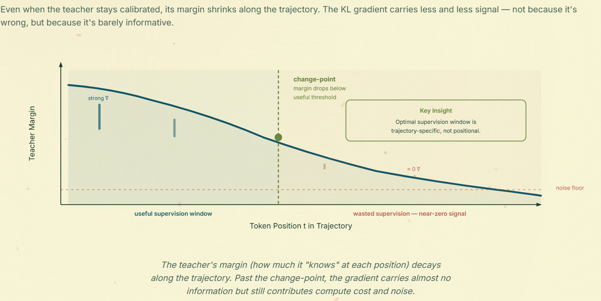
还有三个更小但持续存在的问题，补全了估计器层面的失效。第一，token级损失按构造就是失衡的：少数token承担了大部分损失，其余贡献接近零的梯度，于是整条序列上的平均归约被少数离群点主导。
第二是被称作Rock Token的现象：在训练好的OPD模型里，最多有18% 的token在其余部分都已经饱和之后仍然保持高损失，而由于它们出现频率高，会吸走不成比例的梯度范数份额。学生无法、大概也不应该从教师那里把它们内化下来。于是OPD相当一部分优化带宽花在了既不能提升也不能告知学生推理能力的token上。
第三是教师与学生常常不共享分词器，或者共享大部分但会在特殊token和对话模板上不一致。朴素的token对齐于是产生静默的损坏，看起来像一次正常的训练，实际上在拖低性能。
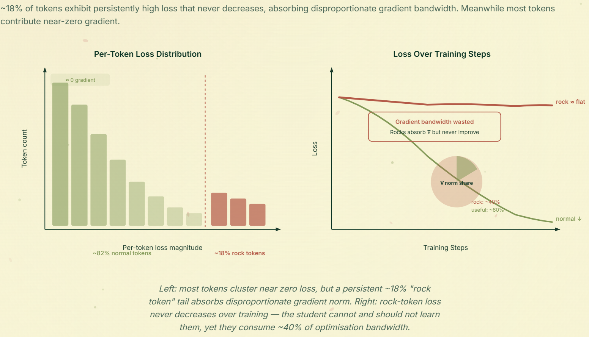
当学生把概率质量集中到高质量输出上时，它必然收缩对教师完整输出分布的覆盖：Pass@1上升，Pass@k下降。在激进的反向KL OPD里，这表现为学生每个提示都塌到单一的推理策略上，贪心解码时看着很好，一旦采样就开始糟糕。OPD中策略内的一半抵消了这个问题的一部分，因为学生自己在生成多样化的rollout，而GKD和G-OPD里按温度缩放的采样给出了一个显式旋钮：更高的温度用梯度噪声换分布覆盖。但底层的权衡不会消失，任何只测一端的OPD配方都只报告了半张图。
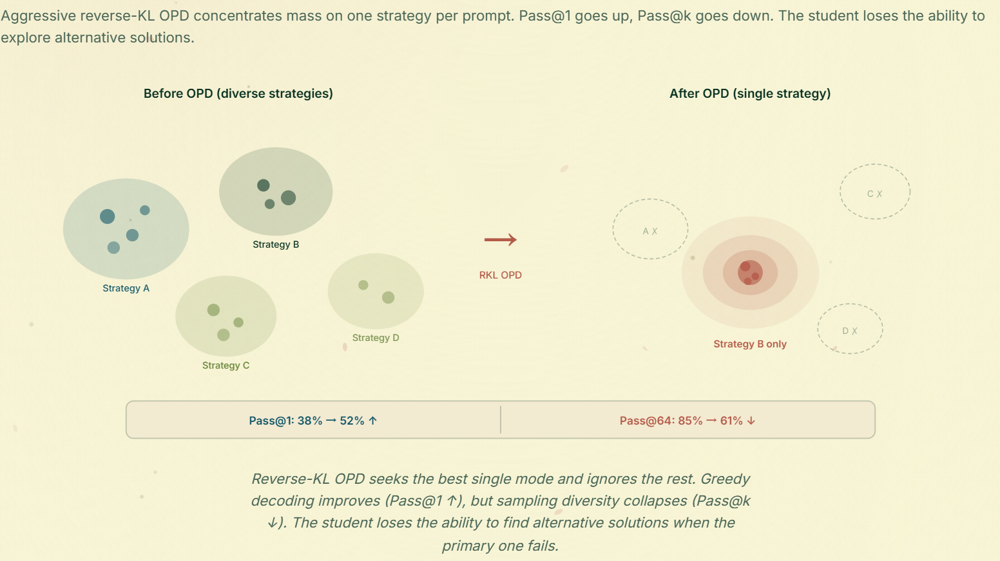
自蒸馏特有的失效模式更隐蔽。教师与学生的权重相同，但教师条件在一份学生推理时拿不到的特权信息上。于是教师的下一token置信度是在部署模型根本看不到的信息下算出来的。
教师条件下的成功率P(正确 | x, PI) 通常不是部署时置信度P(正确 | x) 的有效目标。当特权信息很有信息量时，这两个量可以差很多，而把前者当成后者来蒸馏的自蒸馏方法，不只是校准次优，它们瞄的是错误的分布。
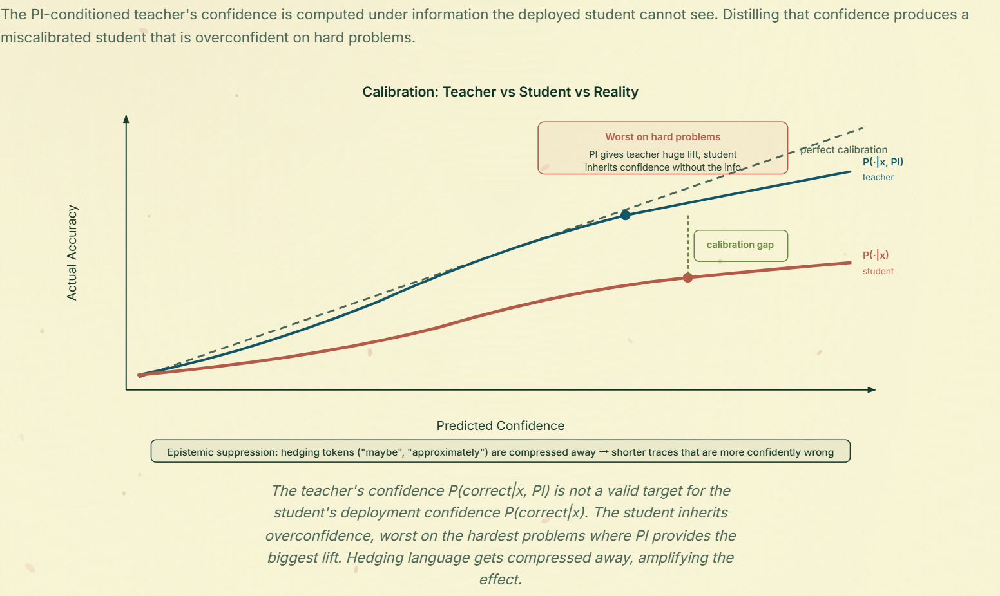
一个相关的自蒸馏病理是认知压制。那些压缩推理轨迹的自蒸馏方法，CRISP最典型，会不成比例地删掉含糊措辞和不确定性标记，因为这些正是教师带特权信息视角会丢掉的高熵token。结果是一条更短的推理轨迹，同时在被省略的那些步骤上更自信地出错，因为学生丢掉了不确定性语言本来隐含携带的校准信号。
每个方法都默默假设：给定特权信息后，教师在你关心的指标上明显比没有特权信息的学生更好。如果这个差距很小，整条流水线就会退化。一个只好一点点的教师给出只好一点点的逐token信号，密集监督于是变成密集噪声而不是密集信号。
当模型被要求在自己带着特权信息也做不好的任务上自蒸馏时，这个故事立刻失效。学生实际上学到的是一套聚合了带特权信息教师的无特权信息策略，这在特权信息是共享潜在规则（系统提示、风格指令）时有效，而在特权信息是实例相关（某一份标准答案、某一份文档）时退化。
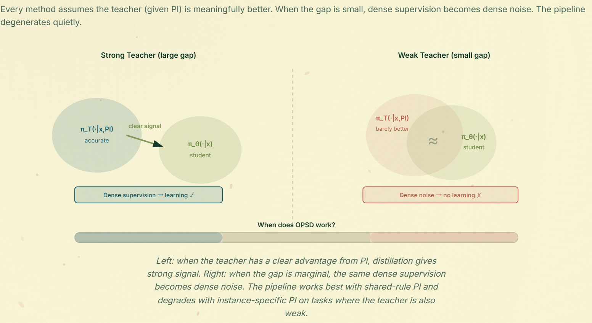
最深的问题是我的判断里的代理失配。带特权信息与不带特权信息两个视角之间的KL被用作逐token更新信号，但它把真实的信息增益与信息状态不对等带来的估计噪声混在了一起。即便优化过程稳定，目标本身也可能是错的。
与此相关的是，蒸馏经常在模仿某一个特定的特权信息实例，而真正的目标是迁移与特权信息无关的技能。一个更好的目标是一族有效特权信息上的平均行为：
π̄(·|x) = 𝔼r∼p(r|x)[ πθ(·|x, r) ]
这个对象捕捉的是技能，而不是对某一条提示的过拟合。它也解释了实证上的分野：共享规则型的特权信息迁移得比实例相关的更好。我的预期是稳健的自蒸馏会是混合体，保留自蒸馏的量级，同时用外部验证器锚定方向与校准。
失效模式那一节是一张路线图的反面版本。顺着它读下来，有几个问题格外突出：要让OPD和自蒸馏从一堆配方变成可靠的后训练工具，这些是绕不过去的。它们都还没有定论。
RLSD的拆分，也就是量级来自自蒸馏、方向来自验证器，大概会是自蒸馏文献收敛方向的早期版本，但它留下了一个显然的下一步问题：一个「软」验证器长什么样？用二值正确性信号去控制每一个逐token更新的符号，本身就很粗糙，而且大多数真实任务压根没有这种信号。这个问题有意思的版本包括长文本生成上的部分得分验证器、能给出逐步而非逐轨迹信号的过程奖励模型验证器，以及验证器的验证器：用一个模型在rollout上的置信度，给另一个模型的蒸馏量级提供方向信号。这些都还没有干净的自蒸馏形式化。
上一节里的那个平均行为公式是一个目标，不是一个方法。真正开放的问题是，那个特权信息族p(r|x) 一开始怎么构造。可能的方向包括：对同一份参考特权信息做改写集成，训练一个小的特权信息生成器为提示产出多样化的提示线索，或者用基于采样的估计器，在同一来源信号的多种随机条件下平均教师视角。任何一条都会把自蒸馏从「蒸馏某一条具体的特权信息」推向「蒸馏特权信息上的条件分布」，而那才是你真正想要的对象。
CaOPD是第一篇认真对待能力与校准分野的论文，但它也明确只是一次单点干预，而不是一个框架。更难的问题版本是把校准烤进OPD目标本身：一个惩罚学生比教师更自信的损失，这里的教师置信度要按学生部署时拥有的信息来算，而不是按教师训练时的信息。局部可教性塌缩和Rock Token也属于这里，它们都是「教师在这个token上已经没什么可教」的诊断，而OPD目前除了截断监督没有别的办法回应。一个有用的未来目标，会让教师的信息量主动去门控逐token损失，比如局部优势、校准、多个特权信息样本之间的一致性，而不是让它均匀地参与进去。
共享分词器这个假设安静地躺在正文每一个方法的地基下面，它大概也是OPD在后训练里能贡献多少的最大单一约束。如果跨分词器的OPD能和同分词器一样干净地工作，配方就不再是「从你自己模型家族里的教师蒸馏」，而变成「从世界上在你关心的事情上最好的那个模型蒸馏」。
一个小的开源权重学生可以从一个前沿模型那里拿推理、从另一个拿工具使用、从第三个拿多语言覆盖、从第四个拿代码，全都在同一次后训练里完成。这是与现有文献里任何东西都性质不同的解锁，也是会让OPD成为RLVR真正后继原语、而不只是一个补充的版本。
目前的状态是，附录A里覆盖的三类方法都能用，但相对同分词器基线都带着明显的质量税，这三类分别是最优传输、双空间投影和词表对齐。策略内的版本更难，因为学生的rollout每一步都要在教师的词表下重新打分，边界不匹配的噪声沿轨迹累积。GOLD和CTPD已经让这件事在TRL里可用了，但底层的对齐仍是瓶颈。有意思的开放版本包括：一个感知轨迹结构而非只感知逐token形状的最优传输形式，一个与学生联合学习而不是事先固定的双空间投影，以及一个彻底去掉分词器依赖的字节级或字符级接口。其中任何一条落地，都会一次性改变每个后训练管线可选的教师菜单，这也是为什么它大概是这份清单上杠杆最高的开放问题。
这已经不只是研究上的好奇心了。从Qwen3、DeepSeek-V4、GLM-5到MiMo-V2-Flash的各类技术报告里，OPD都出现在更重的SFT与RL阶段之后的实际整合环节。工业界的共同模式是：先用预训练和RL风格的优化把能力做出来，再用策略内蒸馏在压缩到可部署学生的同时保住行为。细节各家不同，但OPD扮演的角色越来越一致。
正文里几乎一切都假设教师和学生共享分词器。实践中它们常常不共享，这意味着教师的logits和学生的rollout活在两套不同的词表空间里，无法直接比较。这会让每一个基于散度的OPD方法失效，除非你为此做点什么。目前大致出现了三类修法。
第一类是最优传输式的对齐。ULD（Universal Logit Distillation）把每个模型的logits按概率排序，再用最优传输代价逐位置匹配，从而完全绕开词表身份问题。直觉是，对蒸馏真正重要的是分布的形状，也就是熵、top-K质量和尾部行为，而不是由哪些具体token id承载这个形状。当两套词表覆盖的表面文本量级可比时，这招出人意料地好用；而当其中一套词表明显比另一套更粗时，它在某些语言或领域上会退化。Multi-Level OT把同样的想法扩展到token级和序列级两个层面的传输，而字节级接口干脆绕开对齐问题，把教师分布转成字节级分数、让学生在字节层面解码。
第二类是双空间投影。DSKD及相关方法训练一个小投影，把教师的logit空间投到学生的，或者把两者投到一个共享潜空间，然后在共享空间里做KD。代价是多了一个可学习组件以及对好投影的依赖，好处是你保留了token身份而不是把它丢掉。
第三类是词表级对齐。这一族方法试图在两套词表之间找到显式的token对应关系，必要时做拆分和合并，让逐token损失可以直接计算，其中包括MinED风格的编辑距离匹配及其后继、面向上下文动态映射的CDM、用Soft-DTW做可微序列对齐的DWA-KD，以及通过短多token延续恢复监督的SimCT。这条路线最忠于原来的散度形式，也最容易在特殊token和对话模板上碎掉，而Fu等人所说的分词器错配失真恰好就在那里咬得最狠。
对OPD来说，跨分词器问题还有一个额外的麻烦：学生的rollout是学生的token，但需要教师来打分。把学生的rollout在教师词表下重新分词再逐token打分，会在每一次重新分词时引入静默的边界错配。目前最干净的做法是按rollout而不是按token做对齐，并把KL限制在两套分词在边界上一致的那些位置上。这足以让大多数已发表的配方可用，但显然不是最终答案。
如果你想今天就把跨分词器OPD跑起来，而不是重新实现其中某篇论文，最容易的入口是GOLD（HuggingFace H4的Unlocking On-Policy Distillation for Any Model Family），它把跨分词器OPD配方直接打包进了TRL。GOLD与其说是一个新目标，不如说是一次工程整合，但它是从「我想在两个不同模型家族之间做OPD」到一条能跑的训练循环之间最干净的路径，也是这个领域近来大多数跨家族蒸馏教程指向的东西。当目标是在分词器之间做偏好蒸馏时，CTPD是一个有用的补充，因为它在其他方法只隐式保留的对齐跨度投影之上，加了带教师锚定的DPO和跨分词器重要性采样。
当教师和学生来自真正不同的家族时，这套东西的实际形状大致相同，不管你具体挑哪一对。比如一边是GLM形状、另一边是Qwen或Gemma形状，学生规模在4B到9B。三个现代家族都用字节级BPE，但合并规则和对话模板不同，于是词表在大多数英文内容上重叠，在数字、代码、特殊token和任何语言相关的东西上分歧明显。在这些设置里站得住的配方是：先把教师对话模板从rollout上剥掉，再按学生的对话模板重新输出，这样教师的user与assistant标记永远不会碰到学生的分词器，这是静默损坏的最大来源，也是最容易修的；然后在学生的token上跑策略内rollout，并对每一条在教师词表下重新分词来打分，只在两套分词边界一致的位置上计算损失。对英文散文，这个边界一致率大约在80% 到95% 的位置；对密集数字或代码，可能掉到40% 到60%；在不一致的位置上，最干净的兜底是用排序logits的ULD项，而不是干脆丢掉监督。这样既能在分词器分歧最大的区域保住信号，又不需要伪造一个并不存在的一一对应。GOLD把其中大部分内容用合理默认值开箱提供，这也是它成为这些设置默认入口的主要原因。值得盯住的两个诊断是逐位置对齐率曲线，它应该随训练保持平直、不要悄悄漂移，以及一个显式混入数字、代码和多语言提示的留出评测，因为那正是边界错配咬得最狠、而聚合指标会把它藏起来的切片。
OPD配方的另一个自然扩展是用不止一个教师。G-OPD在理论这一侧已经覆盖了一半，因为G-OPD目标里的参考模型可以是任何东西，把多个参考叠起来只是对损失的小改动。最简单的多教师OPD就是在KL里对教师分布做加权平均：
πstar(y|x) = Σi从1到K的wi·πTi(y|x)
权重wi可以手工固定、由验证集设定，或者按提示根据每个教师在那个提示上的置信度计算。专业分工路由的变体则为每个提示或每个token挑一个教师，依据是它在相关数据切片上的通过率最高。
多教师OPD现在有意思的地方是，学术文献比工业使用薄得多。多教师策略内蒸馏是MiMo-V2-Flash里明确命名的阶段，也以不同名字出现在GLM-5、Nemotron-Cascade 2、Baichuan-M3和DeepSeek-V4里，都是把一批领域专家检查点整合成单个可部署模型的环节。Yumo Xu关于多教师策略内蒸馏的综述文章，是这些发布里实践层面最好的总结。共同的打法可以概括成先专业化再统一：每个领域用RL或SFT训一个专家，然后在学生rollout上跑多教师OPD，让每个专家在自己那一部分提示分布上充当教师。KAT-Coder-V2是这套配方在编码agent上的明确表述，CoPD则是双向版本，专家在RLVR过程中同时互相充当教师共同演化。
这里有意思的失效模式是教师分歧。当所有教师一致时，多教师OPD表现得像一个有效的集成，严格优于任何单个教师。当它们不一致时，朴素的平均分布会比任何单个教师的分布都更平坦，而朴素的KL会把学生推向一个没有任何教师会真正说出的东西。工业配方大多用路由而不是平均来处理这件事，也就是每个提示按领域挑一个教师，但有原则的逐token版本仍然开放。考虑到多教师策略内蒸馏现在在生产管线里占了多重的分量，这是当下比较容易做出有用原创工作的地方之一：「它在每个前沿实验室都上线」与「学术文献上大约只有五篇论文」之间的落差大得不寻常。
参考：https://chinmaykarkar.com/blog/OPD_blog/